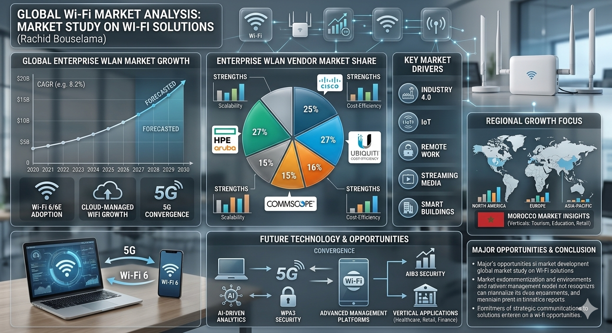
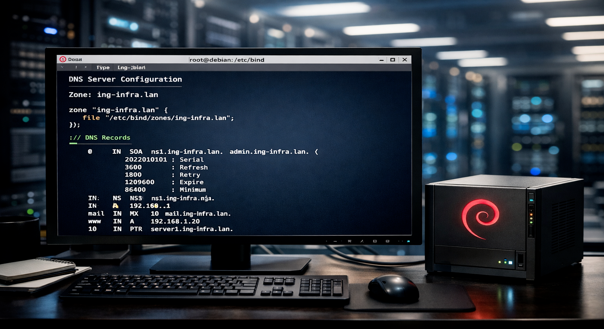
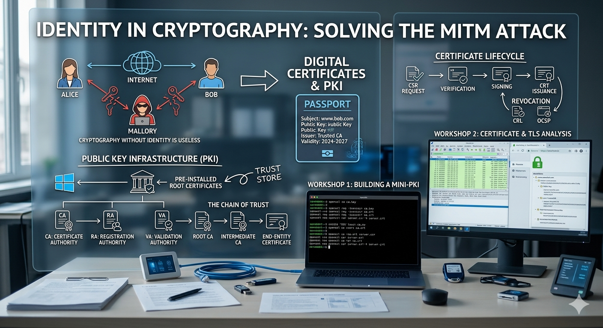

Intelligent IDS: Automated Log Analysis with n8n and AI
Problem: Suricata generates a high volume of logs every day, including many false positives, which consumes analyst time.
Solution: Connected Suricata to an AI workflow through n8n to automate triage and prioritization.
- Suricata writes events to file; n8n detects and reads automatically
- AI analyzes context and identifies critical vs. noise activity
- Automatic email alerts with summary and recommended actions

Wireless Security Researcher
Enterprise Wi-Fi security assessment and attack-simulation research project.
- Tools: Kali Linux, Aircrack-ng Suite, Wireshark, Bettercap, Hashcat, MDK3, Eaphammer
- Simulation: Captured 4-Way Handshakes, ran offline dictionary attacks, created fake APs for MITM tests
- Analysis: Audited enterprise flaws and documented mitigation with WPA3-SAE and WIDS

Wi-Fi Network Planning & Site Survey Optimization
Technical study for designing, mapping, and optimizing wireless coverage while minimizing interference.
- Ekahau Pro / TamoGraph: 3D predictive planning and advanced heatmapping
- NetSpot: Coverage visualization and dead-zone identification
- Acrylic Wi-Fi: Real-time signal monitoring and diagnostics
- AirMagnet Survey: Spectrum analysis and interference-source detection

Wi-Fi Infrastructure Design & Strategic Market Analysis
Designed scalable Wi-Fi 6 solutions for a private school (290 users) and a medical clinic (200+ users).
- Technical Execution: Multi-VLAN architecture and optimized 2.4/5GHz spectrum management
- Advanced Features: 802.11r/k/v roaming plus WPA3 and RADIUS for CNDP-compliant protection
- Financial Modeling: CAPEX/OPEX audit with ROI-based deployment recommendations

Analysis & Documentation of Open-Source Router Firmwares
Technical analysis of open-source router firmware options with scenario-based recommendations.
- Researched official documentation and community resources
- Evaluated installation workflow, hardware compatibility, security, and performance
- Built recommendations for home, enterprise, and campus use cases
- Produced synthesis report with comparative tables and charts

Implementation of Secure Cryptographic Systems
Designed secure encryption workflows and practical cryptography validation scenarios.
- Engineered secure data-encryption workflows using Python and AES-256 standards
- Analyzed vulnerabilities by demonstrating risks of ECB mode vs. secure CBC/GCM modes
- Applied the C.I.A. Triad to guarantee data integrity and authorized access
- Used OpenSSL for robust key generation and cross-platform encryption testing

Debian 13 DNS Server Implementation with BIND9
Built and validated a DNS server environment on Debian 13 using BIND9 for reliable domain resolution.
- Core Stack: Debian 13, BIND9, and apt for package management
- Validation: Used named-checkconf and named-checkzone for verification
- Operations: Managed service lifecycle with systemctl
- Testing: Used dig queries to confirm DNS resolution
Debian 13 Server Hardening and Deployment
Hardened and deployed a Debian 13 server with strict access control and firewall policy.
- Core Platform: Debian 13 with secure package lifecycle using apt
- Access Security: SSH key-based authentication, sudo delegation, Fail2ban protection
- Network Security: Nftables with deny-by-default firewall policy
- System Design: Strategic partitioning for isolation and stability
DNS Master/Slave Replication and Security
Configured secure DNS replication between master and slave BIND9 servers on Debian 13.
- Core Setup: Debian 13 and BIND9 in master/slave roles
- Replication: SOA serial tracking, NOTIFY signaling, AXFR/IXFR transfers
- Security: ACL restrictions on zone transfers to authorized servers only
- Validation: Service/log checks with systemctl and journalctl

Debian Linux Backup and Restoration Strategies
Designed resilient backup and recovery workflows aligned with business continuity objectives.
- Strategy: Applied the 3-2-1 backup rule with defined RPO/RTO targets
- Tooling: Used tar and rsync for archive and incremental backup operations
- Automation: Implemented Bash scripts and scheduled execution via cron
- Advanced Recovery: BorgBackup with encryption/deduplication

Automated IT Monitoring (Innov-Alert)
Built an automated monitoring platform on Linux with Docker and n8n for security visibility.
- Deployed Docker and n8n workflow automation for streamlined monitoring
- Designed workflow to detect new database users and send real-time Slack alerts
- Implemented Docker Volumes for persistence and Docker Compose for maintenance

Multi-Site Web Infrastructure (LEMP Stack)
Deployed and managed a multi-site LEMP environment on a single server for efficient resource usage.
- Implemented Linux, Nginx, MariaDB, and PHP stack to host multiple websites
- Configured Nginx Virtual Hosts for domain-based routing
- Secured database administration via phpMyAdmin with IP restrictions

Secure Web Access Gateway (Squid Proxy)
Implemented a forward proxy on Linux to centralize, secure, and optimize internet access.
- Deployed Squid as a forward proxy for controlled outbound web traffic
- Configured ACL policies to block restricted domains and unauthorized resources
- Enabled caching to reduce bandwidth usage and accelerate repeated requests

System Vulnerability Exploitation & Penetration Testing Lab
Executed a penetration test lab and compromised a vulnerable target through exploitation.
- Exploitation: Used Metasploit to exploit Samba CVE-2007-2447 and obtain root access
- Credential Attack: Used Hydra for dictionary attacks against SSH authentication
- Lab Stack: Kali Linux + Metasploitable2 with Nmap reconnaissance

Network Reconnaissance and Vulnerability Mapping
Performed reconnaissance and vulnerability mapping on Metasploitable2 to evaluate exposed services.
- Nmap: Host discovery, port/service enumeration, version detection, OS fingerprinting
- Netdiscover: ARP-based discovery of live hosts and MAC addresses
- NSE Scripts: Automated checks for weak configurations such as anonymous FTP access
Web Application Penetration Testing
Performed a security audit on DVWA and exploited critical web vulnerabilities.
- OWASP Coverage: SQL Injection and unrestricted file upload leading to RCE
- Exploitation Stack: SQLMap, Msfvenom, Metasploit, and PHP webshell techniques
- Post-Exploitation: Session handling, hash extraction, and password cracking analysis
Implementation of Integrity and Asymmetric Cryptography Protocols
Practical module applying cryptographic controls for integrity, secure key exchange, and authentication.
- OpenSSL: Generated RSA key pairs, produced hashes, and performed encryption/decryption
- Integrity: Used SHA-256/MD5 hashing to validate files and demonstrate avalanche effect
- Hybrid Crypto: Combined RSA and AES-256 for secure and efficient message protection
- Trust Protocols: Digital signatures and Diffie-Hellman key exchange

Implementation of a Mini-PKI and Digital Certificate Management
Designed and deployed a PKI simulation to secure an internal web server with a trusted X.509 certificate chain.
- Certificate Authority: Built a Root CA and signed server certificates using OpenSSL and SHA-256
- Lifecycle Management: Generated private keys, created CSRs, and managed certificate signing workflows
- Validation: Verified integrity and TLS chain transmission using Wireshark and browser inspection

School Student Management System
Full-stack Java web application to manage student records and academic programs with a responsive Bootstrap UI.
- CRUD: Create, read, update, and delete student records
- Search: Wildcard name search, filiere filtering, and dynamic results
- Architecture: MVC with Servlets, JSP, JPA/Hibernate, and repository pattern

GameVerse – Video Game P2P Marketplace
Full-stack Laravel e-commerce platform for buying and selling video games with role-based access control and admin panel.
- RBAC: Role-based middleware for Buyer, Seller, and Admin access control
- E-Commerce: Shopping cart, checkout, inventory tracking, and game listings
- Management: Admin platform/category management with CRUD operations

Deployment and Administration of a Secure Private Cloud Infrastructure
Built a secure self-hosted Nextcloud platform on Ubuntu Server to improve privacy, reduce cloud costs, and support local collaboration.
- Deployed and configured full LAMP stack (Apache2, MySQL/MariaDB, PHP 8.0) for Nextcloud services
- Applied network and system administration: static IP, firewall, DNS/hosts, access control, and storage quotas
- Integrated Nextcloud Talk and OnlyOffice for secure video meetings and real-time document co-editing

Implementation of Advanced Network Security & UTM (FortiGate)
Implemented a defense-in-depth architecture with FortiGate NGFW and UTM controls to secure LAN-to-WAN traffic and inspect encrypted web sessions.
- UTM Stack: Web Filtering, Antivirus, and IPS policies with FortiGuard categories
- SSL Inspection: Applied Certificate Inspection and Deep SSL Inspection based on policy needs
- Validation Lab: Kali Linux client with Metasploitable DMZ target for traffic and policy testing

Secure SSL VPN Deployment & Forensic Supervision
Simulated an urgent telework setup by deploying a secure clientless SSL VPN portal with controlled DMZ access and forensic log supervision.
- Key Concepts: Network access control, secure telecommuting, MFA principles, and digital forensics
- Core Stack: FortiGate firewall VM, SSL VPN Web Mode, and Metasploitable in DMZ
- Forensic Tracking: FortiOS Event Logs for timestamps, source public IPs, usernames, and unauthorized access attempts

Full-Stack ASP.NET Core E-Commerce Platform
Responsive end-to-end e-commerce web application with customer storefront, admin dashboard, and secure identity-based authentication.
- RBAC: Separate customer and administrator workflows for shopping and inventory control
- Core Commerce: Product/category CRUD, image upload, persistent cart, totals, checkout, and order history
- Stack: C#, .NET 10, ASP.NET Core MVC/Razor Pages, EF Core, SQL Server, and ASP.NET Core Identity